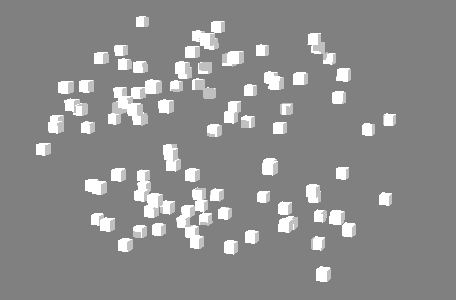

可见性

改变实例化对象的可见性。
可见性节点
随机强度(Random Strength)
设置随机变为不可见的对象数。
阶跃强度(Step Strength)
一次使一个对象变为不可见。默认情况下，按其 ID 顺序变为不可见。
过滤器打开(Filter on)
相应的对象 ID 将保持可见，无论其他值如何均是如此。您可以输入单个对象 ID（即 1、3、5）或编号范围（即 2-6）。
过滤器关闭(Filter off)
相应的对象 ID 将保持不可见，无论其他值如何均是如此。您可以输入单个对象 ID（即 1、3、5）或编号范围（即 2-6）。
反转(Invert)
反转使对象不可见的顺序。
随机种子(Random Seed)
改变
“随机强度”(Random Strength)
的随机化。
视野过滤(Frustrum Filtering)
启用视野过滤(Enable Frustrum Filtering)
根据特定摄影机的视野使点可见/不可见。
使用胶片门(Use Film Gate)
使超出指定摄影机的
“胶片门”(Film Gate)
的点不可见。
视野边界(Frustrum Border)
在视野周围添加边框，以将其包括在过滤中。
摄影机(Camera)
确定要使用哪个摄影机的视野。可以使用鼠标中键将摄影机拖入此字段，或者单击鼠标右键连接选定摄影机。如果摄影机已连接，还可以单击鼠标右键将其移除或显示在大纲视图中。
强度(Strength)
强度贴图(Strength Map)
确定输入文件（2D 纹理、动画纹理等）来控制不可见效果的形状。
贴图投影轴(Map Projection Axis)
确定投影
“强度贴图”(Strength Map)
时所沿的轴。
贴图辅助对象(Map Helper)
显示用于在场景中交互放置
“强度贴图”(Strength Map)
的对象。可以在该字段上单击鼠标右键来创建新的辅助对象（平面）（如果不存在）。还可以使用鼠标中键将网格拖入此字段，或者单击鼠标右键连接选定网格。如果网格已连接，还可以单击鼠标右键来断开其连接或者将其显示在大纲视图中。
注：
为获得最佳结果，请将相同的纹理指定给
“强度贴图”(Strength Map)
和
“贴图辅助对象”(Map Helper)
（在创建新的辅助对象时将自动执行此操作）。
父主题：
MASH 节点概述